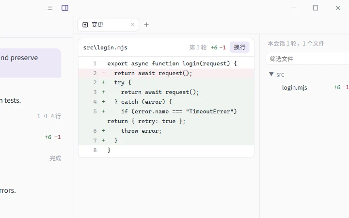
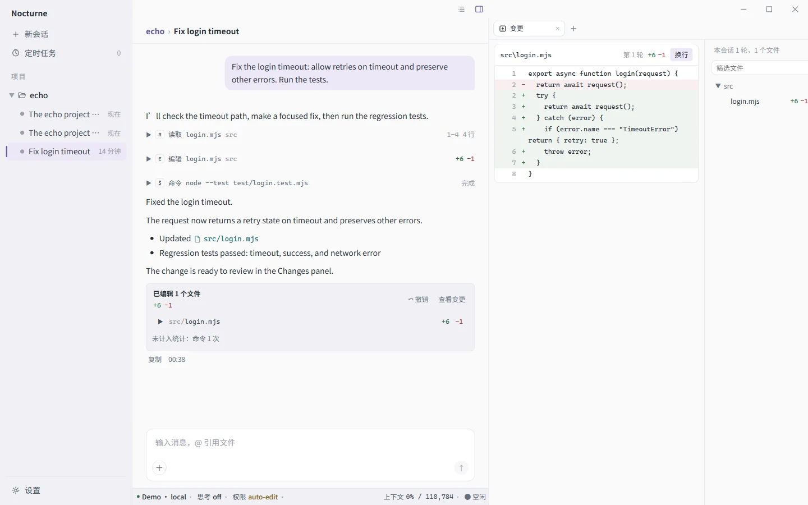
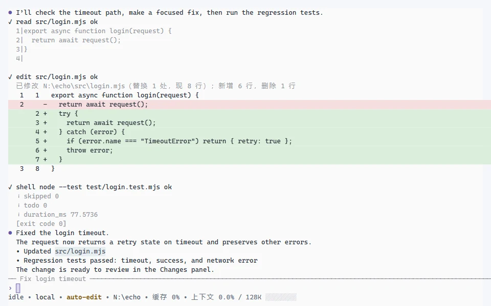
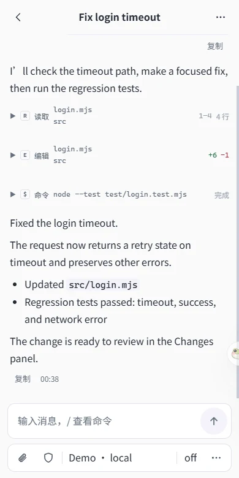

Windows desktop
Files, changes, terminals, and web pages in the side panel. Manage providers, MCP, skills, and subagents in Settings.

Nocturne is a coding assistant that works in your repository. Read code, edit files, and run commands with the permissions you set. Every step stays in a local session you can resume, rewind, or fork.
Windows x64 · All releases
Your sessions, providers, and permission settings stay together. Pick up where you left off.
Files, changes, terminals, and web pages in the side panel. Manage providers, MCP, skills, and subagents in Settings.

nctrnA full-screen interface, inline mode, line-by-line CLI, or a single command.

Continue your computer's sessions in a phone browser, through an end-to-end encrypted relay.

Providers and models. OpenAI-compatible, Anthropic, Responses, and native Gemini protocols. Sign in with ChatGPT or Grok. Model capabilities sync from upstream and models.dev.
Permissions. Six permission presets, plus individual rules. The
smart preset asks a review model first and brings uncertain cases to you.
Subagents. Delegate independent tasks to different models and reasoning levels, or to external assistants such as omp and codex.
Extensions. MCP servers, Hooks, and Agent Skills. Invoke a skill with
/skill-name arguments.
Sessions. Automatic context compaction. Rewind and undo file changes, or fork from a message.
Changes. Each turn's file edits appear in one card. Review the changes or undo the whole turn.
Current version v{{version}}
Changelog